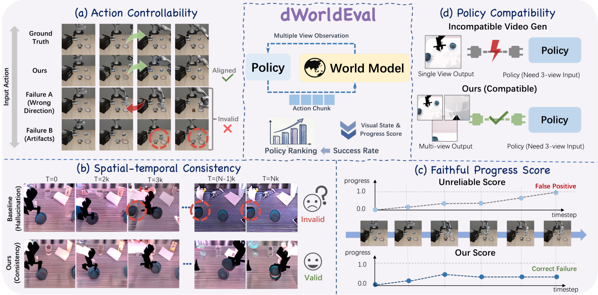
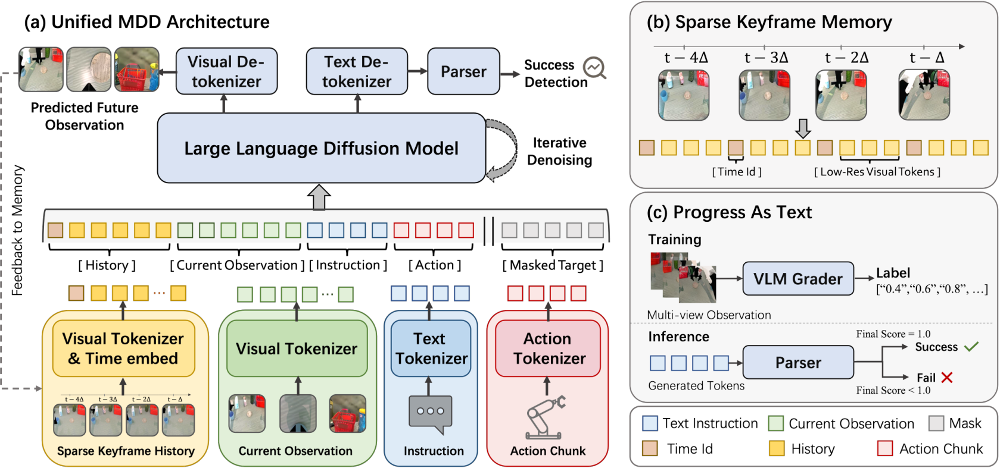
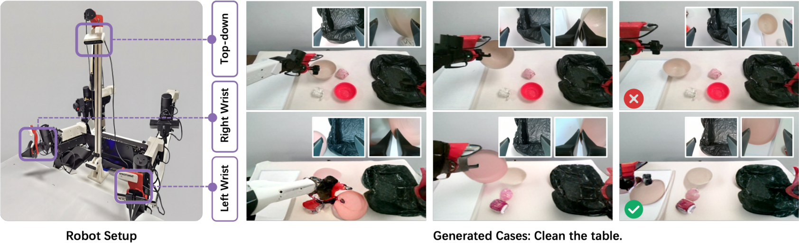
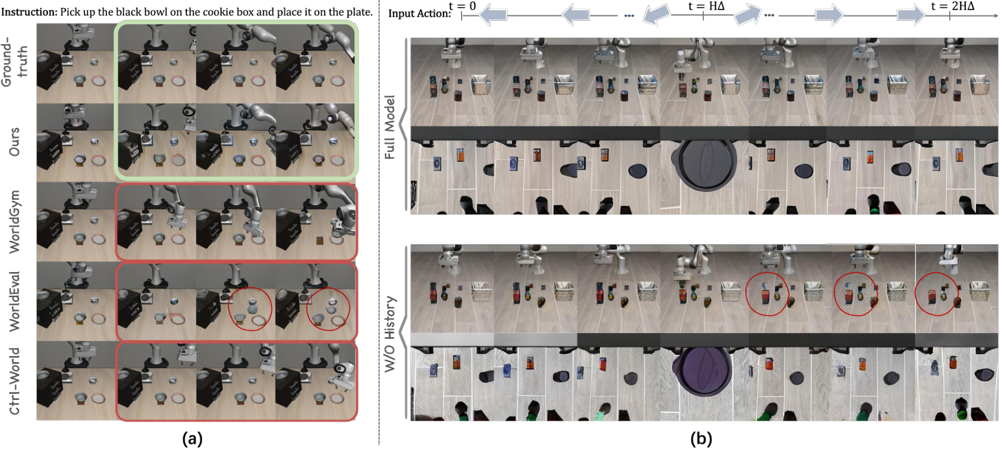
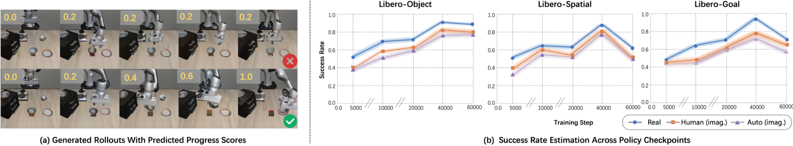
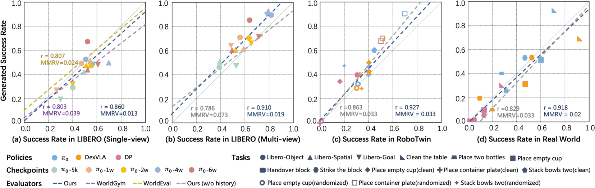
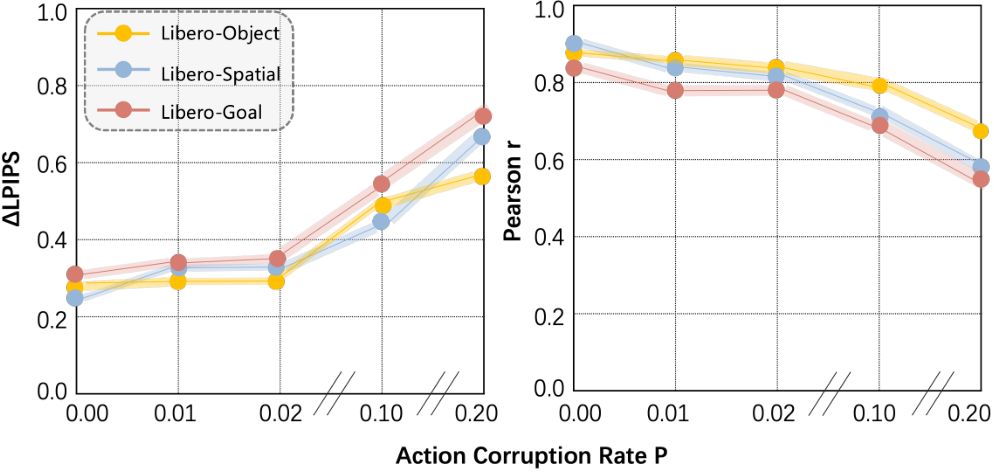
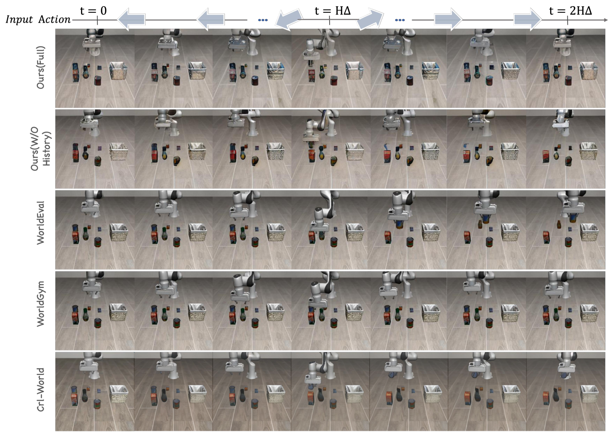

dWorldEval: Scalable Robotic Policy Evaluation via Discrete Diffusion World Model
1. Quick overview of the paper
| Reading positioning | content |
|---|---|
| What should the paper solve? | The evaluation cost of real robot rollout and high-fidelity simulation is high; existing video world models as policy evaluation agents often ignore wrong actions, hallucination success, or object drift/disappearance. |
| The author's approach | Instead of injecting action as a weak condition into the video denoiser, the action chunk, image, language, and progress score are all discretized into a unified token, allowing self-attention to model the causal relationship between the action and future vision. |
| most important results | The strategy evaluation success rate of dWorldEval has a high correlation with real execution on LIBERO, RoboTwin and Real Two-Arm platforms: LIBERO multi-view $r=0.910$, RoboTwin $r=0.927$, Real World $r=0.918$. |
| Things to note when reading | The key indicator is not ordinary LPIPS, but $\Delta$-LPIPS that measures the fidelity of state changes; the appendix action shuffling is used to verify that the model indeed relies on future actions. |
Difficulty rating: ★★★★☆. Need to understand discrete diffusion / masked token denoising, robot action chunk tokenization, world model policy evaluation, LPIPS class perception indicators and VLM progress annotation.
Keywords: World Model; Policy Evaluation; Masked Discrete Diffusion; Action Controllability; Sparse Keyframe Memory; Progress-as-text.
Core contribution list
- Discrete diffusion world model: dWorldEval is proposed to incorporate actions into a unified sequence as the main token to improve action controllability.
- Sparse keyframe memory: Anchor long-range spatial layout with low-resolution history keyframes to mitigate rollout drift.
- Discrete progress token: Jointly generate future vision and task progress scores so that the world model can automatically determine success.
- System evaluation: Validated on LIBERO, RoboTwin and real robotic tasks, reporting $\Delta$-LPIPS, round-trip LPIPS and real/imagined success rate correlations.

2. Motivation
2.1 What problem should be solved?
The paper addresses the scalability problem of robot strategy evaluation: real robot execution is expensive and slow, and simulation requires a large number of assets and physical modeling. The generative world model seems to work as an evaluation proxy, but to be a reliable evaluator, the generated results must faithfully reflect the actions given by the policy, rather than just generating successful videos that "look reasonable".
2.2 Limitations of existing methods
- OOD action has poor generalization: World models are often trained on successful demonstrations, so when faced with undertrained policies or incorrect actions, it is easy to ignore actions and hallucinate successful results.
- Physical inconsistency: Spatiotemporal inconsistencies such as rigid body deformation, object disappearance upon contact, scene layout drift, etc. may occur in long-range rollout.
- Structural bottleneck: Video evaluators such as WorldEval, Ctrl-World, WorldGym, etc. usually inject actions into the visual denoiser through cross-attention or AdaLN as auxiliary conditions; strong video priors may cover weak action signals.
- Successfully detected external: If an external VLM/reward function is required to determine success after generating the video, the score may be inconsistent with the generated content and increase the evaluation overhead.
2.3 The solution ideas of this article
The core idea of dWorldEval is to rewrite the "visual generation problem" into "the masked denoising problem of unifying discrete token sequences". Actions, languages, historical keyframes, current multi-view observations, and target future visual/progress scores all enter the same transformer, allowing visual tokens to directly read action tokens through self-attention. In this way, actions are no longer weak conditions for the video model, but first-class citizens in the generated sequence.
3. Summary of related work
| Related work lines | Thesis content | Positioning of dWorldEval |
|---|---|---|
| World models for policy evaluation | Realistic rollout, AutoEval, physics simulation, WorldEval, Ctrl-World, WorldGym, etc. are used to extend policy assessment. | It is believed that the reliability of the existing video evaluator is limited because the action is only an auxiliary condition for the visual denoiser. |
| Discrete diffusion in robotics | Discrete diffusion models such as DLM / LLaDA / LaViDa / MMaDA can perform flexible sampling and controllable generation; dVLA and others use discrete diffusion for policy learning. | This article does not use discrete diffusion policy, but learns evaluator world model, and jointly predicts visual observation and progress score. |
direct comparison
| Dimensions | WorldEval / Ctrl-World | WorldGym | dWorldEval |
|---|---|---|---|
| action injection | It mainly enters the video denoiser through the cross-attention type condition mechanism. | Inject action conditions via AdaLN modulation. | The action chunk is FAST tokenized and used as a unified sequence token, self-attend with the visual token. |
| Main risks | Strong visual priors may override actions, generating transitions that are not faithful to the action. | There are also weak action conditions and long-range drift problems. | Structurally enhance the controllability of actions, and use keyframe memory to control drift. |
| successful detection | Often rely on external discriminator / VLM / reward. | Reliance on external evaluation. | A progress token is generated, and the final state $\hat v_T=1$ is determined to be successful. |
| Experimental indicators | The correlation is weaker and the rank violation is higher. The article mentions MMRV up to 0.039. | The long-range consistency error increases significantly with horizon. | LIBERO single-view MMRV=0.013; multi-domain correlation is about $r\approx0.9$. |
4. Detailed explanation of method
4.1 Method overview

The input includes language instructions $l$, current observation $o_t$, history $h_t$ and future action sequence $\mathbf a_t$. The output is the future visual result $\hat o_{t+\Delta}$ at horizon $\Delta$ and the task progress score $\hat v_{t+\Delta}\in[0, 1]$. During policy evaluation, the policy $\pi$ is rolled out in a closed loop in the world model to generate an imagined trajectory, and then the success function is used to estimate the imagined success rate.
4.2 Method evolution
4.3 Core design and mathematical derivation
4.3.1 World Model Formulation
This formula shows that the world model does not only predict videos, but also predicts future images and task completion progress.
$$(\hat o_{t+\Delta}, \hat v_{t+\Delta})\sim \mathcal W_\theta(\cdot\mid o_t, \mathbf a_t, h_t, l)$$| $o_t$ | Current multi-view observations. |
| $h_t$ | Historical context, subsequently implemented by sparse keyframe memory. |
| $\mathbf a_t$ | The future action chunk is the policy output to be evaluated. |
| $\hat v_{t+\Delta}$ | Completion progress after decoding of discrete progress token, range $[0, 1]$. |
When evaluating the strategy, the real robot is not run, but the closed-loop imagination is performed in the world model.
$$J=\frac{1}{N}\sum_{i=1}^N \mathcal S(\tau_i), \qquad \tau=\{\hat o_0, \hat o_\Delta, \dots, \hat o_T\}$$$\mathcal S(\cdot)$ is the success indicator. In the automatic version of this article, success is determined when the final progress token reaches 1.
4.3.2 Unified Token Sequence
dWorldEval uses MAGVIT-v2 tokenizer to encode RGB observations, LLaDA tokenizer to encode language, and FAST to encode continuous action chunks. Different modal tokens are mapped to a single index space through fixed offsets, and then flattened into a sequence. Due to the use of unified self-attention, visual tokens can directly attend action tokens at each layer, allowing the generation of changes to be fine-grained and controlled by actions.
4.3.3 Sparse Keyframe Memory
To avoid long-range rollout drift, the model maintains a sliding window that samples $K$ keyframes at a fixed stride of $\Delta$ from the recent history. Historical frames are encoded at low resolution and only use a fixed global view (e.g. top-down) to save tokens; current observations retain all viewing angles and full resolution to capture contact details. Absolute frame indexes are prepended as text tokens to corresponding historical keyframes, helping the model maintain chronological order.
4.3.4 Progress-as-text
During training, the authors define milestones for the task and use SEED-1.5VL few-shot ICL to estimate the task completion progress of the visual state. The score is converted into a discrete text token (e.g. "1.0") and appended to the target sequence. During inference, the model directly generates progress tokens, and the final state token is used to automatically calculate the success rate.
4.3.5 Masked Discrete Diffusion Objective
During training, future target tokens are randomly masked, and the model learns to recover clean tokens under context and noisy targets.
$$\mathcal L_{\text{WM}}=\mathbb E_{\tau, \lambda, \tilde{\mathbf y}}\left[-\frac{1}{m(\lambda)}\sum_{j\in\Omega_\lambda}w_j\log p_\theta(y_j\mid \mathbf c_t, \tilde{\mathbf y}_{t+\Delta}, \lambda)\right]$$| $\lambda\sim\mathcal U(0, 1)$ | Diffusion level, determines mask strength. |
| $q_\lambda$ | mask-based forward corruption process. |
| $\Omega_\lambda$ | The set of masked target token subscripts. |
| $m(\lambda)$ | The masking probability at this level is used for normalization. |
| $w_j$ | Modal reweighting; in the experiment, progress tokens were set to 2 and visual tokens were set to 1. |
derived intuition
4.3.6 $\Delta$-LPIPS
Ordinary LPIPS looks at "image likeness", $\Delta$-LPIPS looks at "changes caused by motion likeness".
$$\Delta\mathrm{LPIPS}=\mathbb E_t\left[d_{\mathrm{lpips}}(\mathrm{norm}(\Delta\hat o_t), \mathrm{norm}(\Delta o_t))\right], \quad \Delta o_t=o_{t+\Delta}-o_t$$$\mathrm{norm}(\cdot)$ is per-sample RMS normalization. This metric is used to evaluate action-conditioned dynamic fidelity and is particularly suitable for detecting whether the model ignores erroneous actions.
4.4 Implementation points
- Tokenizer: MAGVIT-v2 for RGB, LLaDA for language, FAST for continuous action chunks.
- Input resolution: All models predict $256^2$ multi-view results; historical keyframes use $128^2$.
- Historical memory: Use $K=4$ sparse keyframes, stride aligned with action chunk length $\Delta$.
- Forecast horizon: $\Delta$ is aligned with action chunk length, selected from $[2, 8]$.
- Sampling: Inference uses 16-step iterative parallel decoding.
- loss weight: progress token $w_j=2$, visual token $w_j=1$.
- Appendix implementation supplement: Appendix A.2 mentions that the model is initialized based on LLaDA-8B-Instruct, and the training follows LLaDA + MMaDA setup; multi-views are spliced using RGB, and each view is first resized to $256\times256$ and then horizontally concatenate.
5. Experiment
5.1 Experimental setup
| Project | settings | Source |
|---|---|---|
| LIBERO | LIBERO-Object / Spatial / Goal / 100; synchronized third-person and wrist views; 5.5k official expert demonstrations + 1k suboptimal policy failed rollouts. | Text §Experiments; Appendix A.1 |
| RoboTwin | ARX arm configuration, 10 contact-intensive tableware manipulation tasks, 5.5k trajectories. | Text §Experimental Setup |
| Real World | AgileX dual 6-DoF robotic arms, three RealSense 457s; 5.2k trajectories with 1k human-collected failures; five tasks. | Text §Experimental Setup; Fig. setup |
| Baselines | WorldEval, WorldGym, Ctrl-World; policy includes $\pi_0$ multi-checkpoints, DexVLA, Diffusion Policy, etc. | Text §Experimental Setup |
| indicator | LPIPS, $\Delta$-LPIPS, round-trip LPIPS, Pearson correlation $r$, MMRV, imagined success rate. | Text §Experiments |
| Code/Project Page | The project page is https: //dworldeval.github.io/; arXiv. The source code does not contain a link to the code warehouse. | main.tex |

5.2 Main results: Can the World Model act faithfully?
| Method | LPIPS ↓ | $\Delta$LPIPS Expert ↓ | $\Delta$LPIPS Failure ↓ |
|---|---|---|---|
| WorldEval | 0.262 | 0.423 | 0.701 |
| WorldGym | 0.218 | 0.347 | 0.650 |
| Ctrl-World | 0.220 | 0.334 | 0.416 |
| dWorldEval | 0.215 | 0.315 | 0.352 |
The key comparison in this table is the Failure subset: WorldGym degrades from expert 0.347 to failure 0.650, WorldEval to 0.701; dWorldEval is 0.352 on failure, indicating that the dynamic changes caused by wrong actions are still better modeled.

5.3 Long-range consistency and memory ablation
| Method | H=5 | H=10 | H=15 | H=20 |
|---|---|---|---|---|
| Ours w/o Memory | 0.177 | 0.186 | 0.302 | 0.411 |
| Ours Full | 0.130 | 0.145 | 0.193 | 0.243 |
The round-trip protocol first rolls out $H$ steps, then appends inverse actions to $2H$, and uses LPIPS between the initial frame and the final generated frame to measure drift. Without memory, H=20 reaches 0.411; the complete model is 0.243, indicating that sparse keyframe memory has a direct contribution to long-range layout stability.
5.4 Automatic visual scoring and policy evaluation agents
The progress token evaluates multiple $\pi_0$ checkpoints and compares Real, Human imagined grading and Auto imagined grading. The authors report that automatic scoring can track real execution, including non-monotonic performance degradation in later checkpoints, indicating that the model does not simply assume that "the later the time, the higher the progress."

| Domain | Report results | meaning |
|---|---|---|
| LIBERO single-view | dWorldEval MMRV=0.013; baselines MMRV up to 0.039. | There are fewer rank violations and the policy ranking is more stable. |
| LIBERO multi-view | $r=0.910$; w/o-history ablation in multi-view $r$ drops to 0.786. | History memory is especially important for multi-perspective evaluation. |
| RoboTwin | $r=0.927$. | Maintain strong correlation on heterogeneous strategies and simulated robot tasks. |
| Real World | $r=0.918$. | The imagined success rate in a real robot environment is still highly correlated with the actual success rate. |

5.5 Supplementary experiments (including appendices)
| Supplementary experiments | key results | Source |
|---|---|---|
| Universal multi-view fidelity | LIBERO third-person / wrist $\Delta$LPIPS is 0.324 / 0.303; RoboTwin top-down / wrist is 0.317 / 0.345; Real World top-down / wrist is 0.365 / 0.336. | Text §More Experiments |
| Baseline long-horizon consistency | When H=20, WorldEval 0.531, WorldGym 0.482, Ctrl-World 0.370, Ours 0.243. | Text Table 2; Appendix D |
| Action-shuffle sanity check | Aligned actions: LPIPS 0.215, $\Delta$LPIPS 0.324; Shuffled actions: LPIPS 0.461, $\Delta$LPIPS 0.697. | Appendix B |
| Action corruption probability | The appendix describes that as the action chunks exchange probability $p$ increases, $\Delta$LPIPS increases approximately linearly, which is used to verify that this indicator is sensitive to action mismatch. | Appendix B; Fig. ablate_action_corruption |
| VLM progress supervision | SEED-1.5VL uses few-shot ICL and divides pick-and-place into six stages: 0.0/0.2/0.4/0.6/0.8/1.0. | Appendix C |


7. Analysis, Limitations and Boundaries
7.1 The most valuable part of this paper
Based on the paper's own argument, the value of dWorldEval lies in breaking down the reliability of the policy evaluation world model into three measurable conditions: action controllability, spatiotemporal consistency and discriminative task completion. The methods correspond to unified action tokens, sparse keyframe memory and progress-as-text respectively; the experiments correspond to $\Delta$LPIPS, round-trip LPIPS and success-rate correlation respectively.
7.2 Why the results hold up
The paper provides a chain of evidence that supports each other: $\Delta$LPIPS of the Failure subset shows that the model can reflect wrong actions; the action shuffling/corruption appendix verifies that the indicators and model do depend on actions; memory ablation proves that long-range consistency does not appear automatically; policy correlation shows that these world-model properties are ultimately transformed into more reliable policy ranking.
7.3 Analysis and explanation of the results given in the paper
- The authors attribute the degradation of baselines on failure data to actions being covered by visual priors as weak conditions.
- The authors believe that sparse keyframe memory reduces long-range drift, and drift can lead to false negatives and destroy correlation with real performance.
- The author uses the sharp transition of progress score and non-monotonic checkpoint tracking to illustrate that automatic scoring is based on visual changes rather than time priors.
- Appendix baseline consistency visualization explains high LPIPS from compound failures: both spatiotemporal drift and the inability to strictly follow an inverse action sequence.
7.4 Limitations of the author's statement
There are no separate limitations paragraphs for the main text and Conclusion. The boundaries can be objectively defined from the scope of the original experiment: the model requires robot data to be trained from scratch; progress labels rely on SEED-1.5VL few-shot ICL generation; the real-world experiment covers five dual-arm tasks; hyperparameters such as optimizer, batch size, total number of training steps, hardware and complete sampling configuration are not fully given in the source code text/appendix.
7.5 Applicable boundaries and discussion
- Applicable: Scenarios where large-scale comparison of robot policies is required, and real execution costs are high, but multi-view rollout data and action chunks are available.
- Key prerequisites: The action tokenizer, visual tokenizer and language/progress token must be stably mapped to a unified discrete space.
- Prerequisites for evaluation: $\Delta$-LPIPS is suitable for measuring visual changes caused by actions, but it is still a visual perception indicator and does not mean that the physical state is completely correct.
- Appendix supplement: The appendix provides task details, implementation details, action shuffling, VLM prompt, progress visualization, baseline consistency and more visualizations, which have been integrated into the Methods and Experiments chapter.
Acceptance record
- Chapter coverage: Introduction, Related Work, Methodology, Experiments, Conclusion, Appendix A-E are all mapped to reporting locations.
- Chart coverage: The main PDF figures in the source code have been converted to PNG and key figures are embedded; supplementary figures are placed in the corresponding positions of experiments and discussions.
- Appendix integration: Implementation details, action shuffling, VLM prompt, progress visualization, baseline consistency and more visualization have been integrated into methods/experiments/discussion.
- Objectivity: The analysis and boundaries are based only on the original text, tables, figures and appendices, without adding suggestions for improvement.